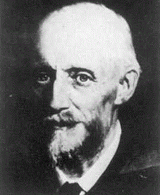
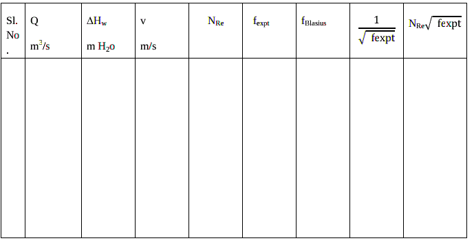

Each of these flows behave in different manners in terms of their frictional
energy loss while flowing, and have different equations that predict their
behavior.Reynolds studied the conditions under which one type of flow changes
into the other and found that the critical velocity ,at which laminar flow changes
into turbulent flow ,depends on four quantities: the diameter of the tube, viscosity,
density and average velocity of the liquid. He found that these four factors can be
combined into one group and that the change in kind of flow occurs at a definite
value of the group. The grouping of the variables so found was Reynolds Number(
.gif)
)
.Turbulent or laminar flow is determined by Reynolds Number.

Osbourne Reynolds (1842-1912)
The Reynolds number expresses the ratio of inertial (resistant to change or
motion) forces to viscous forces.
.gif) (1)
(1)
Where D is the diameter of the pipe
.gif)
is the density of fluid
V is the average velocity of the fluid
.gif)
is the viscosity of fluid.
The Reynolds number can be written in terms of kinematic viscosity ( η)
.gif) = dynamic viscosity / density=/ (2)
= dynamic viscosity / density=/ (2)
The Reynolds number is important in analyzing any type of flow when there is
substantial velocity gradient (i.e. shear.) It indicates the relative significance of the
viscous effect compared to the inertia effect.
The flow is
- laminar when NRe< 2100
- turbulenttransient when 2100 < N Re< 4000
- transient turbulent when 4000 < NRe
At laminar region,viscous forces are dominant as compared to inertial forces.
Under laminar flow condition the pressure drop per unit length is proportional to
the velocity. At transition region, the experimental results are not reproducible.
Finally, at turbulent region, inertial forces are dominant. For turbulent flow, the
pressure drop becomes proportional to the velocity raised to a power of 2.
Relationship Between Frictional Head Loss and
Frictional Pressure Drop
The energy loss in pipe flow due to friction can be expressed as a pressure
drop instead of as a head loss. Chemical and mechanical engineers often work with
pressure drop, whereas civil engineers usually work with head loss. The
relationship between frictional head loss and frictional pressure drop is simply:
.gif) (4)
(4)
where:
= frictional pressure drop ,
.gif)
= frictional head loss due to skin friction,
= fluid density,
g = acceleration due to gravity
Head Loss due to skin friction (
) can be related to wall shear.
.gif) (5)
(5)
Where
.gif)
is the shear
stress at the wall of the pipe ,L is the length of the pipe and
.gif)
is pressure drop due to friction losses.
is not conveniently determined so the dimensionless friction factor is introduced into the equations.
The Friction Factor It is denoted by f and defined as the ratio of the wall shear
stress to the product of the velocity head (V
2/2) and density=
.gif) (6)
(6)
.gif)
.gif) (7)
(7)
Where f is the Fannings friction factor
- Only need L, D, V and f to get friction loss
- Valid for both laminar and turbulent flow
- Valid for Newtonian and Non-Newtonian fluids
Correlations were made between the fanning friction factor and the Reynolds number for both
laminar and turbulent flow in a variety of pipes.
For laminar flow, first principles can be used to develop a relation between
Reynolds number and friction factor. The Hagen-Poiseuille equation relates the
frictional pressure drop to fluid velocity, viscosity, and pipe dimension:
.gif) (8)
(8)
Equating the pressure drop due to friction in the Hagen-Poiseuille equation given
by Eq.8, with the overall pressure drop across the pipe, and combining with the
Fanning equation given by Eq.7, results in relation for laminar flow as
f=16/NRe (9)
A first principle analysis can not be used to develop a relation between friction
factor and Reynolds numbers for turbulent flow. A variety of empirical
correlations exist for turbulent flow in smooth pipes.
Blasius equations :
.gif) (10)
(10)
The above correlation is valid for
.gif)
The Blasius equation is purely an empirical equation and has no theoretical basis,
but it is a convenient form for application. The entire turbulent region can be
represented by the von Kármán-Nikuradse equation:
.gif) (11)
(11)
for Re > 4000, turbulent
It has long been known that in turbulent flow a rough pipe leads to a larger
friction factor for a given Reynolds number than a smooth pipe does. If a rough
pipe is smoothed , the friction factor is reduced. When further smoothing brings
about no further reduction in friction factor for a given Reynolds number,the tube
is said to be hydraulically smooth.
In turbulent flow, the friction factor, f depends upon the Reynolds number and
on the relative roughness of the pipe, k/D, where, k is the roughness
parameter(average roughness height of the pipe) and D is the inner diameter of the
pipe. . The general behavior of turbulent pipe flow in the presence of surface
roughness is well established. When k is very small compared to the pipe diameter
D i.e. k/D->0, f depends only on NRe. When k/D is of a significant value, at low
NRe , the flow can be considered as in smooth regime (there is no effect of
roughness). As NRe increases, the flow becomes transitionally rough, called as
transition regime in which the friction factor rises above the smooth value and is a
function of both k and NRe and as NRe increases more and more, the flow
eventually reaches a fully rough regime in which f is independent of NRe .
In a smooth pipe flow, the viscous sub layer completely submerges the effect of k
on the flow. In this case, the friction factor f is a function of NRe and is
independent of the effect of k on the flow.
In case of rough pipe flow, the viscous sub layer thickness is very small when
compared to roughness height and thus the flow is dominated by the roughness of
the pipe wall and f is the function only of k/D and is independent of NRe .
For design purposes, the frictional characteristics of round pipes,both smooth and
rough ,are summarized by the friction factor chart, which is a log-log plot of
Fanning friction factor (f ) vs NRe which is based on Moody’s chart .
Procedure
FLOW THROUGH PIPES
Aim of the Experiment:
- To determine the frictional losses encountered in a hydraulically smooth pipe under
laminar and turbulent flow situations.
- To determine the effect of Reynolds number on Fanning friction factor for laminar and
turbulent flow situations in a hydraulically smooth pipe. Verify the correlations for
laminar flow and turbulent flow (Blasius correlation and Nicurdse’s correlation)
Apparatus required:
CCL
4,H
gmanometer.
Procedure:
- Keep the valve leading to the smooth pipe open and valves leading to other lines closed.
- Keep the bypass valve completely open and the main valve completely closed. Switch on
the pump.
- Connect a CCL4 manometer,to the pressure taps across the smooth pipe. Ensure that no air
bubbles present and height in both the limbs of manometer are the same.
- Set a flow rate of water through the pipe by opening the main valve and throttling the
bypass valve suitably using the rotameter.
- Note down the rotameter reading and manometer reading after a steady state is attained.
- Increase the flow rate of water by opening the main valve and throttling the bypass valve
suitably and repeat step 4 and 5.
- Use mercury manometer for higher flow rates.
- Take eight readings with CCL4 manometer as well as with Hg manometer.
Data:
Diameter of the pipe= D =
m
Length of the pipe= L = m
Density of water =
= kg/m
3
Viscosity of water =
=cp= kg/ms
Density of CCl
4 = 1600 kg/m
3
Density of Hg = 13600 kg/m
3
Observations:
Sl No.
|
Rotameter
reading LPM
|
Manometer reading
|
Hm cm
|
|
|
|
Calculations:
- ∆Hm is cm of manometric fluid
- Volumetric flow rate, Q = m3/s
- Pressure drop in m of water
.gif)
- Cross sectional area of the pipe A =
.gif)
- Average velocity through the pipe = V=Q/A = m/s
- Reynolds number = NRe =
.gif) =
=
- Friction factor f is calculated using f Blasius equation:
- Friction factor
.gif)
- Nicurdse’s correlation:
.gif)

Plot f
expt vs N
Re on log-log graph. Compare them.
To verify Nicurdse’s correlation:
.gif)
on a semi log graph
Find the slope and intercept.
Compare with Nicurdse ’s correlation.
Discuss on effect of Reynolds number on friction factor.
Assignment
Refer Moody’s chart wherever required for friction factor
1. What is the skin frictional loss when water is flowing at 1.65 m/s through a horizontal 33m
long pipe having inside diameter of 2.067inches and absolute roughness 0.0018 inch . Use
the following data:
Density of water = 995 kg/m3, viscosity of water = 0.85cP
Assume that inlet and exit points are at the same elevation and entrance and exit losses are
negligible.
2. Water with a coefficient of dynamic viscosity of 1.4 x 10 -3 NS/m2 flows along a pipe 50mm
diameter. If the pipe has an absolute roughness of 0.0000 7m, calculate:
a. The head lost due to friction per km of pipe
b. The power required to overcome friction per km of pipe
(i) For a flow rate of 3 litres/min
(ii) For a flow rate of 40 litres/min
3. Pressure drop in a water pipeline with turbulent flow is 25 psi for ordinary steel pipe.
What would the pressure drop be if copper pipe were used? Hint: use coefficient of roughness
Reference
- Warren Lee McCabe, Julian Cleveland Smith, Peter Harriott ,Unit operation of chemical engineering , 5th Edition,1993
- Coulson and Richardson, Chemical Engineering Volume I Pargamon Press 3rd edition.1977
- Walter L. Badger and Julius T. Banchero, Introduction to Chemical engineering.. Tata McGraw-Hill book Edition 1997,India
- Perry's Chemical Engineers' Handbook (7th Edition) Edited by Perry, R.H.; Green, D.W. © 1997 McGraw-Hill
- A. S. Foust, Principles of Unit Operations, 2nd ed. John Wiley and Sons, Inc., 1980
- Industrial Instrumentation by Donald P Eckman, Wiley Eastern Publication
- Lecture notes by M.Subramanian http://www.msubbu.in/ln/fm/
Contributors List
- Prof. Vidya Shetty K, Department of Chemical Engineering, NITK
- Karthik | Department of Chemical Engineering, NITK
- Amogha V Somayaji | Student, Department of Chemical Engineering, NITK | 181CH006
- Haneena| Virtual Lab Intern at NITK Surathkal-SCEM, Mangalore | 4SF18CS048
- Jaison DSouza B | Virtual Lab Intern at NITK Surathkal-SCEM, Mangalore | 4SF17CS062
- Erin Sheryl Pereira | Virtual Lab Intern at NITK Surathkal-SCEM, Mangalore | 4SF18CS044
- Anusha B Salian | JRF - CSD, NITK
- Akshaya | JRF - CSD, NITK